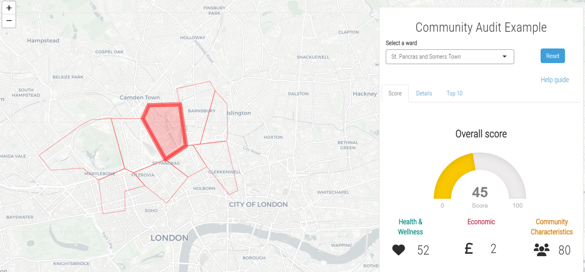

Dr Jamie Samson
Data-driven story teller

About
I am Senior Research Manager at MindFolio a B2B market research agency based in the UK.
My role is to take complex consumer and big data, and craft it into stories to help managers make more informed business decisions. To create these compelling data-driven narratives I use tools such as R Shiny.
Prior to joining MindFolio, I gained a PhD from the University of Zurich, where I focussed on behavioural decision-making.Industry skills
behavioural research | health/wellbeing | green design
concept
development | visioning
consumer/market research
end-to-end
project management
Technical skills
R
shiny | markdown
ggplot2 | plotly | D3 | igraph | leaflet
tidyverse
API’s | webscraping
Analytical techniques
base statistical techniques | clustering/segmentation | ML
sentiment
analysis | NLP | topic modelling
Research techniques
behavioural science
survey design/programming
best-worst scaling
| various flavours of choice modelling
Other skills
html | css | javascript
Windows server
Git | GitHub
Netlify
| MongoDB
Projects
From creating a unique bespoke survey platform to a tool to analyse community health, I have worked on a range of development-led data projects, bringing a unique perspective on how data is presented/used

|
 |